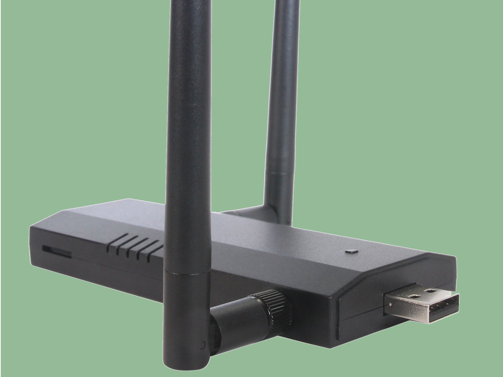
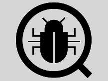

"Develop your own hacky solution for any of the following topics"
-

Rogue access point
Rogue access point
The Raspberry Pi and Kali Linux are a perfect platform to homenbrew a Hak5 Pineapple style Man-in-the-Middle WiFi Network. For educational purposes, of course! -
WEP/WPA Hacking
WEP/WPA HackingWe all know that WEP and WPA (1) are depricated. In this project you can find out why, by breaking in to a real (but unsufficiently secured) WiFi Network. You heard about KRAck against WPA2? Could be next!
-

Intrusion Detection/ SIEM
Intrusion Detection/ SIEM
Monitoring network traffic like a real CSO? Get yourself familiar with Snort/Surricata, AlienVault and others and deploy them in a real network! -
Email Encryption
Email Encryption
WhatsApp got hacked, Facebook eavesdrops your messages. Why is message encryption so difficult? Learn about PGP and set up an infrastructure for Email Encryption -

Bug Hunter
Bug Hunter
Fuzzing, Taint, Symbolic Execution? How are security vulnerabilities found in real software? Use our resources to run AFL, Valgrind, etc.